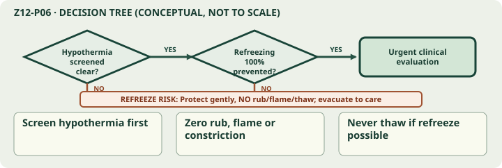

Z12-P06 · Extreme environments · Adapted historical material
Recognize frostbite signs and prevent catastrophic refreezing
Protect suspected frozen tissue from trauma and refreezing until safe clinical evaluation is reached.
When it applies · Subfreezing exposure affecting fingers, toes, ears, nose or cheeks outside immediate hospital care.
Equipment · Dry loose clean dressings, warm shelter, communication device and transport/evacuation plan.

Actions
- Screen for whole-body hypothermia FIRST (life overrides limb), then check affected skin for numbness, stinging followed by loss of feeling, unusual firmness/waxiness or color change (never rely on skin color alone across diverse skin tones).[T04, T03]
- Remove rings, watches or tight straps gently before swelling starts, protect the numb area from pressure, walking trauma and further wind, and NEVER rub, massage, pack with snow or hold near direct fire/stoves.[T04, C02]
- Follow WMS refreezing boundaries: do NOT attempt active rapid thawing in the field if there is ANY risk the tissue could refreeze before reaching definitive medical care—refreezing thawed tissue causes devastating additional injury.[T04]
Failure recognition · Rubbing frozen fingers vigorously with snow or thawing frozen toes over a camp stove only to walk miles back in freezing boots.[T04]
Verify · Confirm hypothermia is screened, constricting jewelry is removed, zero rubbing/direct heat is used and safe evacuation or clinical advice is underway.[T04, T03, ED]
Stop or change course · Blisters, hard waxy tissue, persistent numbness, loss of function or coexisting hypothermia require urgent professional clinical assessment.[T04, T03, T02]
Evidence and editorial notes
- C02 · USDA Forest Service / Smokey Bear · Smokey Bear’s Campfire Safety Guide (agency PDF)
- Section: Build your campfire; choose a location · Conditions: Where campfires are currently permitted
Support: Use an established fire ring where required or available. Protect the area from nearby combustible materials, avoid windy conditions and keep water ready.
Limitations: Site clearances vary by fuel load, slope, and wind; no universal safe radius fits all terrain. · Conflicting evidence: None; aligns with USFS-FIRE.
Editorial note: Grounds site-selection and ring-preparation procedures. · Specialist reviewer: Fire prevention and land management
Primary source · checked 2026-11-24 - T02 · American Red Cross · First Aid Steps (current web edition)
- Section: First Aid Steps > Call 9-1-1 · Conditions: Lay emergency response to unresponsiveness, abnormal breathing or severe bleeding
Support: Activate EMS and get needed equipment. Follow dispatcher directions and act within training.
Limitations: Remote locations may delay EMS arrival, requiring sustained stabilization after activation. · Conflicting evidence: None; aligns with NPS-E.
Editorial note: Mandates early emergency activation and dispatcher adherence. · Specialist reviewer: EMS and wilderness medicine
Primary source · checked 2026-11-24 - T03 · CDC · Preventing Hypothermia (current web edition)
- Section: Warning signs; What to do · Conditions: Cold exposure and suspected hypothermia
Support: Confusion, slurred speech and drowsiness are warning signs. Obtain medical attention and protect from further cold.
Limitations: Shivering may stop as hypothermia worsens; absence of shivering is not reassurance. · Conflicting evidence: None; aligns with WMS cold guidelines.
Editorial note: Core neurological red-flag trigger for stopping activity and calling rescue. · Specialist reviewer: Wilderness medicine
Primary source · checked 2026-11-24 - T04 · Wilderness Medical Society · Frostbite clinical practice guideline 2024 update (2024)
- Section: Field treatment scenarios and Table 1 · Conditions: Suspected frostbite outside immediate medical care
Support: Avoid refreezing. Whether to actively thaw depends on ability to keep tissue thawed and evacuate. Detailed treatment requires clinical review.
Limitations: Field assessment cannot reliably determine final tissue depth. · Conflicting evidence: Supersedes outdated rubbing or snow-pack thawing myths.
Editorial note: Retained for cross-zone cold-injury stop boundaries. · Specialist reviewer: Wilderness medicine
Primary source · checked 2026-11-24
Source lineage · B012-P08/P25 frostbite and WMS 2024 guideline; adapted historical material · Classification · Adapted historical material.